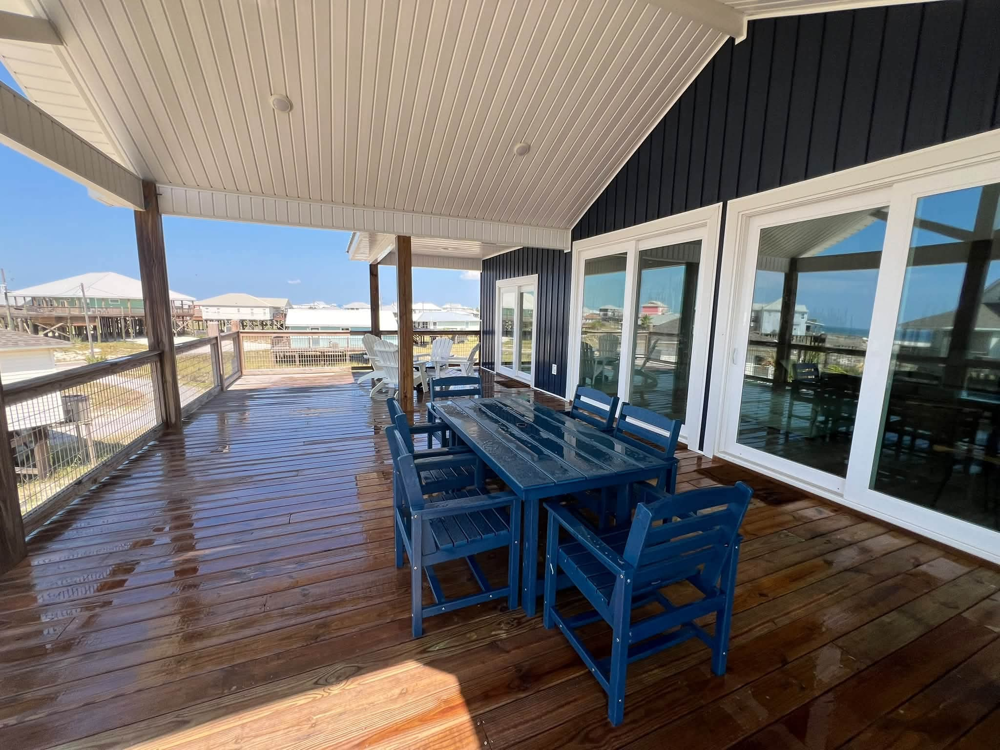

From the blog
Deck and Patio Washing in Mobile, AL: What to Expect
October 19, 2026

Backyards in Mobile get used hard: grilling, kids, pets, holiday cookouts. And our weather works against them. Shade plus humidity grows algae on decks, patios, and walkways faster than almost anywhere else. A green, slick deck is not just ugly. It is a slip hazard. A professional wash brings the wood or concrete back to its real color and makes it safe to walk on again.
Why decks and patios go green here
It is the same story all over Mobile County, from Grand Bay and Irvington to Theodore and Tillmans Corner: trees shade the deck, moisture hangs in the air, and algae and mildew colonize the surface. Concrete patios and pavers get it too, especially on the north side of the house. Once it takes hold, plain rain will not wash it off. It needs treatment.
Pressure washing vs soft washing for wood
This is where a pro earns the price. Concrete and pavers handle pressure washing well. Wood decks are different: too much pressure chews up the wood fibers, leaves streaks called wand marks, and raises splinters. A proper deck wash uses low pressure with cleaning solution, the same idea as a house soft wash, to kill the growth and lift the grime without damaging the wood. If your deck is getting sealed or stained afterward, this gentle prep is exactly what it needs to bond right.
What a professional wash covers
- Full deck surface. Boards, steps, and railings cleaned edge to edge.
- Patio, pavers, and walkways. Surface cleaner passes for an even clean with no striping.
- Between the boards. Leaves and grit get flushed out of the gaps so water drains instead of pooling.
- Full rinse down. Plants, furniture, and nearby siding get rinsed clean of any overspray.
What it costs
Decks and patios are priced by square footage plus a base fee. Decks run $0.35 per square foot plus $100, patios run $0.25 per square foot plus $100. An average patio washes up for around $200 on our pay page. Measure your space or let our estimator do it, and you will see the exact price before you book.
Book before the holidays
Thanksgiving cookouts and Christmas gatherings are right around the corner, and the backyard is where everybody ends up. A deck and patio wash in October or early November has it ready for company. We back every job with the same care that earned our 5-Star Google Reviews.
Deck looking slick and green? Get your free quote.
Kinney Cleaning Services washes decks and patios across Mobile County. Veteran owned and operated since 2019.
Call (251) 767-0754 Get a Custom Quote